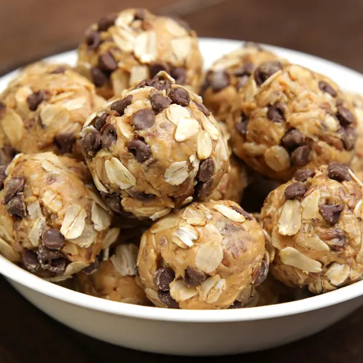

Peanut Butter Energy Bites
These little bites of bliss are the perfect pick-me-up for when you need a quick and satisfying snack. Packed with protein-rich peanut butter, oats, honey, and chocolate chips, these no-bake bites are loaded with flavor and energy to keep you going all day long. They're a tasty and convenient option for on-the-go snacking or a pre-workout boost!

Ingredients
Makes 16
- ⅔ cup creamy peanut butter
- 1 cup old-fashioned oats, plus extra for rolling
- 1 ½ tablespoons honey
- ¼ cup mini chocolate chips, plus more for rolling
- ¼ cup flax seeds, optional
Step by Step Instructions
Mix Ingedients
- Mix all ingredients in a bowl until well-combined.
Time to chill
- Cover with plastic wrap and chill in the refrigerator for at least 30 minutes.
Form the bites
- Once done chilling, roll into approximately 1 inch (2.5 cm) balls. (Cover hands in a light layer of butter or oil to facilitate rolling and avoid getting sticky hands.)
Roll on goodies
- Lay out a thin layer of oats and chocolate chips on a cutting board or work surface and roll the balls in the mixture. Finish off by rolling each ball between your hands to pack in the oats and chocolate chips.
Yum!
- Enjoy
I hope you enjoy this as much as I do! Be sure to comment your thoughts and I would love to hear your favorite spin and tweaks on this recipe!